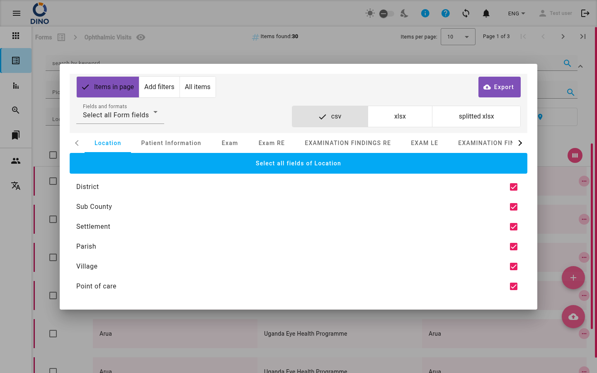
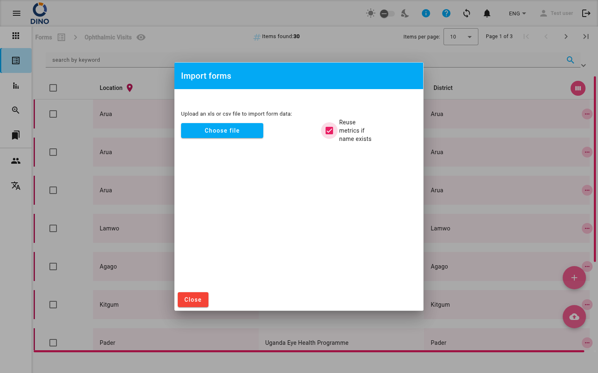

Formulaires
La page Formulaires est votre centre névralgique pour toute collecte de données structurées dans Dino. Vous pouvez y gérer les schémas de formulaires, consulter et modifier les soumissions, et effectuer des actions groupées sur vos données.

Grille des schémas de formulaires
Lorsque vous ouvrez la page Formulaires pour la première fois, vous voyez une grille de tous les schémas de formulaires disponibles. Chaque vignette affiche le nom et l'icône du schéma. Survolez une vignette pour faire apparaître les boutons d'action :
- Modifier le schéma — Ouvre l'éditeur de schéma pour modifier la structure du formulaire.
- Supprimer le schéma — Supprime le schéma et toutes ses soumissions.
- Partager une URL publique — Génère un lien public vers le schéma pour la collecte de données externe.
- Voir la carte — Ouvre la Carte des formulaires affichant les soumissions géolocalisées.
- Discuter avec vos données — Lance DataChat pour poser des questions sur les soumissions.
Cliquez sur une vignette pour ouvrir la liste des soumissions de ce schéma.
Utilisez la barre de filtres
En haut de la page, vous pouvez filtrer les schémas par mot-clé. La grille se met à jour automatiquement.
Liste des soumissions
Après avoir sélectionné un schéma de formulaire, vous accédez à une vue de liste détaillée. Ce tableau montre toutes les soumissions (entrées) pour ce schéma. Chaque ligne affiche les champs clés, y compris le statut (si défini) et les métriques personnalisées.

Depuis cette liste, vous pouvez :
- Ajouter une nouvelle soumission — Cliquez sur le bouton flottant + (en bas à droite) pour ouvrir un formulaire vierge.
- Modifier une soumission existante — Cliquez sur l'icône modifier de la ligne.
- Voir les détails de la soumission — Cliquez sur l'icône voir.
- Supprimer une soumission — Cliquez sur l'icône supprimer.
- Imprimer ou télécharger un PDF ou DOCX de la soumission.
- Imprimer un badge (si la métrique de cas est active).
- Développer une ligne pour voir les détails imbriqués (si configuré).
Filtrage et recherche
Utilisez le panneau de filtrage extensible en haut de la liste :
- Recherche par mot-clé — Trouvez des soumissions par n'importe quel texte.
- Plage de dates — Filtrez par date de création.
- Filtres de métriques — Affinez par lieu, projet, zone, cas, organisation ou autres métriques personnalisées.
- Filtre de statut — Filtrez par statut du formulaire (par exemple, Approuvé, En attente).
- Filtre par utilisateur — Affichez uniquement les soumissions créées par un utilisateur spécifique.
Vous pouvez enregistrer et recharger des préréglages de filtres à l'aide du gestionnaire de préréglages.
Actions groupées
Sélectionnez plusieurs lignes à l'aide des cases à cocher. Effectuez ensuite des opérations groupées :
- Supprimer — Supprime les soumissions sélectionnées.
- Modification groupée — Modifie un champ dans toutes les soumissions sélectionnées.
Export et import

Cliquez sur le bouton exporter (icône de téléchargement cloud) pour ouvrir la boîte de dialogue d'exportation. Choisissez entre les formats CSV ou XLSX et téléchargez toutes les soumissions filtrées.

Si un bouton importer (icône de téléchargement cloud) apparaît, vous pouvez télécharger un fichier (CSV ou XLSX) pour ajouter plusieurs soumissions à la fois.
Autorisations
Certaines actions (modifier le schéma, supprimer, exporter, importer) ne sont disponibles que si vous disposez des autorisations nécessaires. Contactez votre administrateur pour demander l'accès.
Pages connexes
- Modifier le schéma de formulaire — Personnalisez la structure d'un formulaire.
- Carte des formulaires — Visualisez les soumissions géolocalisées sur une carte.
- DataChat — Posez des questions sur vos données de formulaire.
- Modifier le formulaire — Remplissez ou modifiez une seule soumission.
- Rapports — Créez des résumés et des visualisations à partir de vos données.